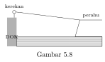
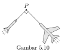

Coba kerjakan dulu. Tombol Petunjuk memberi arah; langkah pembahasan terbuka dengan kode akses dari pengajar.
Masukkan kode akses untuk membuka langkah pembahasan.
Langkah umum soal laju yang berkaitan: (1) misalkan setiap besaran dengan sebuah variabel, termasuk \(t\) untuk waktu, lalu gambar situasinya; (2) cari hubungan antarvariabel; (3) turunkan kedua ruas terhadap \(t\); (4) tuliskan yang diketahui dan ditanya dalam bentuk turunan terhadap \(t\); (5) substitusikan nilai pada saat yang ditanyakan. Laju bertanda negatif berarti besaran itu berkurang. Karena setiap variabel adalah fungsi dari \(t\), menurunkan terhadap \(t\) selalu memakai aturan rantai, misalnya \(\frac{d}{dt}[x^2]=2x\cdot\frac{dx}{dt}\), sedangkan \(\frac{d}{dt}[L]=1\cdot\frac{dL}{dt}\). Aturan lain: aturan perkalian \((uv)'=u'v+uv'\) dan aturan pembagian \(\left(\frac{u}{v}\right)'=\frac{u'v-uv'}{v^2}\), dengan tanda aksen berarti turunan terhadap \(t\). Notasi \(\at{\frac{dx}{dt}}{x=3}\) berarti nilai \(\frac{dx}{dt}\) pada saat \(x=3\).
No. 1
Misalkan \(L\) luas bujursangkar yang sisi-sisinya \(x\) dan asumsikan \(x\) merupakan fungsi waktu.
Bagaimana hubungan \(\dfrac{dL}{dt}\) dan \(\dfrac{dx}{dt}\)?
Pada keadaan tertentu sisi-sisinya 3 m dan bertambah dengan laju 2 m/menit. Seberapa cepatkah luas bertambah pada saat itu?
Petunjuk: Mulai dari hubungan \(L=x^2\), lalu turunkan kedua ruas terhadap \(t\) dengan aturan rantai.
No. 2
Misalkan \(L\) luas lingkaran dengan jari-jari \(r\) dan asumsikan \(r\) fungsi dari waktu.
Bagaimana hubungan \(\dfrac{dA}{dt}\) dan \(\dfrac{dr}{dt}\)?
Jika jari-jari 5 cm dan bertambah dengan laju 2 cm/det. Berapa cepat luas bertambah pada saat itu.
Petunjuk: Mulai dari \(A=\pi r^2\) dan turunkan terhadap \(t\); jangan lupa \(r\) fungsi dari \(t\).
No. 3
Misalkan \(V\) volume silinder yang mempunyai tinggi \(h\) dan jari-jari \(r\) dan asumsikan \(h\) dan \(r\) merupakan fungsi waktu.
Bagaimana hubungan \(\dfrac{dV}{dt}\), \(\dfrac{dh}{dt}\) dan \(\dfrac{dr}{dt}\)?
Pada suatu waktu tinggi 6 cm dan bertambah 1 cm/det, jika jari-jari silinder 10 cm dan berkurang 1 cm/det. Berapa cepat volume silinder bertambah pada saat itu? Apakah volume silinder bertambah atau berkurang pada saat itu.
Petunjuk: \(V=\pi r^2h\) memuat dua besaran yang berubah, jadi turunkan dengan aturan perkalian.
No. 4
Misalkan \(l\) panjang diagonal segiempat yang sisi-sisinya \(x\) dan \(y\) dan asumsikan \(x\) dan \(y\) fungsi dari waktu.
Bagaimana hubungan \(\dfrac{dl}{dt}\), \(\dfrac{dx}{dt}\) dan \(\dfrac{dy}{dt}\)?
Jika \(x\) bertambah dengan laju \(\frac{1}{2}\) cm/det dan \(y\) berkurang dengan laju \(\frac{1}{4}\) cm/det. Berapa cepat ukuran diagonal berubah jika \(x=3\) cm dan \(y=4\) cm? Apakah diagonal bertambah atau berkurang pada saat itu?
Petunjuk: Diagonal memenuhi \(l^2=x^2+y^2\) (Pythagoras). Turunkan kedua ruas terhadap \(t\).
No. 5
Misalkan \(\theta\) (dalam radian) sudut lancip pada segitiga dengan \(x\) dan \(y\) panjang sisi-sisinya yang berhubungan dan berlawanan dengan \(\theta\). Asumsikan \(x\) dan \(y\) fungsi dari waktu.
Bagaimana hubungan \(\dfrac{d\theta}{dt}\), \(\dfrac{dx}{dt}\) dan \(\dfrac{dy}{dt}\)?
Pada suatu waktu \(x=2\) satuan dan bertambah 1 satuan/det. dan \(y=2\) satuan dan berkurang \(\frac{1}{4}\) satuan/det. Berapa cepat \(\theta\) berubah saat itu? Apakah \(\theta\) bertambah atau berkurang?
Petunjuk: Hubungkan \(\theta\), \(x\), dan \(y\) lewat \(\tan\theta=\frac{y}{x}\), lalu turunkan kedua ruas terhadap \(t\).
No. 6
Diberikan \(z=x^3y^2\), dengan \(x\) dan \(y\) berubah terhadap waktu. Pada saat tertentu jika \(x=1\) dan \(y=2\), \(x\) berkurang dengan laju 2 satuan/det dan \(y\) bertambah dengan laju 3 satuan/det, maka berapa cepat \(z\) berubah saat itu? Apakah \(z\) bertambah atau berkurang?
Petunjuk: Turunkan \(z=x^3y^2\) terhadap \(t\) dengan aturan perkalian; "berkurang" berarti lajunya bernilai negatif.
No. 7
Jarum menit sebuah jam panjangnya 4 cm. Jika dimulai jarum menit tegak lurus, berapa cepat luas sektor dilalui oleh jarum yang bertambah pada setiap saat selama gerakan jarum yang akan datang?
Petunjuk: Luas juring dengan sudut \(\alpha\) (derajat) adalah \(\frac{\alpha}{360^\circ}\pi r^2\). Jarum menit menempuh \(360^\circ\) dalam 60 menit.
No. 8
Batu dijatuhkan ke kolam tenang yang menghasilkan riak lingkaran yang jari-jarinya bertambah dengan laju 3 m/det. Berapa cepat luas yang tertutup oleh riak yang bertambah pada akhir 10 detik?
Petunjuk: Cari dulu jari-jari riak pada detik ke-10, lalu pakai \(A=\pi r^2\).
No. 9
Minyak memancar dari tanker bocor menyebar dalam lingkaran yang bertambah dengan laju konstan 6 km\(^2\)/jam. Seberapa cepatkah bertambahnya jari-jari tumpahan ketika luasnya 9 km\(^2\)?
Petunjuk: Dari \(A=\pi r^2\), cari \(r\) saat luasnya 9 km\(^2\), lalu turunkan terhadap \(t\).
No. 10
Balon bulat membumbung sehingga volumenya bertambah dengan laju 3 cm\(^3\)/menit. Berapa cepat diameter balon bertambah bila jari-jari 10 cm?
Petunjuk: Nyatakan volume bola dalam diameter, \(V=\frac{\pi}{6}D^3\), atau hitung \(\frac{dr}{dt}\) dulu lalu \(D=2r\).
No. 11
Balon bulat digembosi sehingga jari-jarinya berkurang dengan laju 15 cm/menit. Jika jari-jarinya 9 cm, berapa laju gerak udara?
Petunjuk: "Laju gerak udara" berarti laju perubahan volume. Pakai \(V=\frac43\pi r^3\); jari-jari berkurang berarti \(\frac{dr}{dt}\) negatif.
No. 12
Tangga dengan panjang 17 m disandarkan pada dinding. Jika dasar tangga ditarik menjauh dari dinding dengan laju konstan 5 m/det, maka seberapa cepatkah bagian atas tangga turun ketika berada 8 m di atas tanah?
Petunjuk: Tangga, dinding, dan tanah membentuk segitiga siku-siku: \(x^2+y^2=17^2\). Cari \(x\) saat \(y=8\) m dulu.
No. 13
Papan kayu dengan panjang 10 m bersandar di tembok. Jika suatu saat bagian bawah papan 2 m dari tembok dan ditekan ke tembok dengan laju 6 m/det. Seberapa cepatkah bertambahnya sudut lancip yang dibuat papan tersebut dengan tanah?
Petunjuk: Hubungkan sudut dengan jarak bawah papan: \(\cos\theta=\frac{x}{10}\). Bawah papan ditekan ke tembok berarti \(x\) mengecil.
No. 14
Pada suatu saat setiap sisi sebuah kubus mempunyai panjang 5 cm dan volumenya bertambah dengan laju 2 cm\(^3\)/menit. Berapa cepat luas permukaan kubus bertambah?
Petunjuk: Nyatakan luas permukaan langsung dalam volume, atau cari \(\frac{dx}{dt}\) dari \(V=x^3\) dulu lalu pakai \(L=6x^2\).
No. 15
Roket naik vertikal dan dipantau oleh stasiun radar yang terletak 5 km dari landasan peluncuran. Berapa cepat roket naik jika tingginya 4 km dan jaraknya dari stasiun radar bertambah dengan laju 2000 km/jam?
Petunjuk: Roket, landasan, dan radar membentuk segitiga siku-siku dengan alas tetap 5 km. Cari jarak radar-roket saat tinggi 4 km.
No. 16
Untuk kamera dan roket pada Gambar 5.3(a) dengan laju berapa jarak antara kamera dan roket bertambah jika roket berada 4000 m dan naik secara vertikal 880 m/det?
Petunjuk: Gunakan segitiga siku-siku kamera-landasan-roket pada Gambar 5.3(a); alasnya tetap.
No. 17
Untuk kamera dan roket pada Gambar 5.3(a) pada laju berapa roket naik jika sudut elevasi \(\pi/4\) radian dan bertambah dengan laju 0,2 rad/det?
Petunjuk: Hubungkan tinggi roket dengan sudut elevasi lewat \(\tan\theta\), lalu turunkan terhadap \(t\).
No. 18
Sebuah satelit dalam orbit elliptik mengelilingi bumi dengan jarak \(r\) mil dari pusat bumi, diberikan:
\[
r=\frac{4995}{1+0{,}12\cos\theta}
\]
dengan \(\theta\) adalah sudut yang diukur dari orbit terdekat dari permukaan bumi (Gambar 5.6).
Tentukan ketinggian satelit pada perigee (titik terdekat dari permukaan bumi) dan pada apogee (titik terjauh dari permukaan bumi). Gunakan 3960 mil sebagai jari-jari bumi.
Pada suatu saat \(\theta\) adalah \(120^\circ\), sudut bertambah dengan laju \(2{,}7^\circ\)/menit. Tentukan ketinggian satelit dan laju pada saat itu. Nyatakan laju dalam satuan mil/menit.
Petunjuk: Turunkan \(r\) terhadap \(t\) dengan aturan rantai: \(r\) fungsi dari \(\theta\) dan \(\theta\) fungsi dari \(t\).
No. 19
Pesawat terbang horisontal pada ketinggian konstan 4000 kaki di atas titik observasi (Gambar 5.7). Pada suatu saat sudut elevasi \(\theta\) adalah \(30^\circ\) dan makin lama makin berkurang, sedangkan kecepatan pesawat 300 mil/jam.
Berapa cepat \(\theta\) berkurang pada saat itu? Nyatakan hasilnya dalam satuan derajat/detik.
Berapa cepat jarak antara pesawat dan titik observasi berubah pada saat itu? Nyatakan hasilnya dalam satuan kaki/det. Gunakan 1 mil \(=5280\) kaki.
Petunjuk: Tinggi pesawat tetap 4000 kaki, jadi pakai \(\tan\theta=\frac{4000}{x}\); samakan satuan kaki dan mil dulu.
No. 20
Tangki air berbentuk kerucut dengan jari-jari alasnya 10 m dan tinggi kerucut 24 m. Jika air mengalir ke dalam tangki dengan laju 20 m\(^3\)/menit. Berapa cepat kedalaman air bertambah pada saat kedalaman air 16 m?
Petunjuk: Air membentuk kerucut kecil yang sebangun dengan tangki: \(\frac{r}{h}=\frac{10}{24}\). Nyatakan volume air dalam \(h\) saja.
No. 21
Biji-bijian dituangkan dari luncuran dengan laju 8 m\(^3\)/menit membentuk suatu tumpukan berbentuk kerucut dengan ketinggian selalu dua kali jari-jarinya. Berapa cepat ketinggian tumpukan bertambah pada saat itu, jika ketinggian tumpukan 6 m?
Petunjuk: Karena \(h=2r\), nyatakan volume kerucut dalam \(h\) saja sebelum diturunkan.
No. 22
Pasir dituangkan dari suatu luncuran akan membentuk suatu tumpukan berupa kerucut dengan tinggi selalu sama dengan diameter. Jika tinggi bertambah dengan laju konstan 5 m/menit, dengan laju berapa pasir dituangkan dari peluncuran jika tinggi tumpukan 10 m?
Petunjuk: Tinggi sama dengan diameter berarti \(r=\frac h2\). Yang ditanya laju volume.
No. 23
Pesawat naik dengan sudut \(30^\circ\) terhadap bidang horisontal. Berapa cepat ketinggian pesawat naik jika kecepatannya 500 mil/jam?
Petunjuk: Lintasan pesawat, ketinggian, dan sudut \(30^\circ\) membentuk segitiga siku-siku: tinggi \(=\) jarak tempuh \(\cdot\sin30^\circ\).
No. 24
Perahu ditarik ke dok dengan tali yang digantungkan pada kerekan di atas dok (Gambar 5.8). Tali digantungkan pada haluan perahu pada titik 10 m di bawah kerekan. Jika tali ditarik melalui kerekan dengan laju 20 m/menit, dengan laju berapa perahu mendekati dok jika tali yang keluar 125 m?

Petunjuk: Tali, jarak perahu ke dok, dan tinggi kerekan 10 m membentuk segitiga siku-siku. Tali ditarik berarti panjangnya berkurang.
No. 25
Untuk perahu pada Soal 24, berapa cepat tali ditarik agar perahu mendekati dok dengan laju 12 m/menit pada saat tali yang keluar 125 m?
Petunjuk: Pakai hubungan yang sama seperti Soal 24, tetapi kali ini yang diketahui laju perahu dan yang ditanya laju tali.
No. 26
Seorang laki-laki tingginya 6 m berjalan dengan laju 3 m/det menuju lampu jalan dengan tinggi 18 m (Gambar 5.9).
Berapa laju panjang bayangan bergerak?
Berapa cepat ujung bayangannya bergerak?
Petunjuk: Pakai kesebangunan segitiga lampu-tanah dan orang-bayangannya. Ujung bayangan bergerak sejauh jarak orang ditambah panjang bayangan.
No. 27
Suatu pesawat terbang pada ketinggian konstan dengan kecepatan konstan 600 mil/jam. Peluru kendali penangkis pesawat udara ditembakkan pada arah tegak lurus lintasan pesawat, sehingga akan menghancurkan pesawat pada titik \(P\) (Gambar 5.10). Pada saat itu pesawat berada 2 mil dari titik sasaran \(P\), dan peluru kendali 4 mil ke titik \(P\) melaju dengan kecepatan 1200 mil/jam. Pada saat itu berapa cepat jarak antara pesawat dan peluru kendali berkurang?

Petunjuk: Posisi pesawat dan peluru dari titik \(P\) membentuk segitiga siku-siku; turunkan jarak keduanya terhadap \(t\).
No. 28
Selesaikan Soal 27 dengan asumsi sudut antara lintasan terbang \(120^\circ\) sebagai ganti dari asumsi lintasan terbang tegak lurus. (Petunjuk: Gunakan hukum cosinus).
Petunjuk: Sama seperti Soal 27, tetapi segitiganya tidak siku-siku: pakai hukum cosinus dengan sudut \(120^\circ\).
No. 29
Helikopter polisi terbang ke utara dengan kecepatan 100 mil/jam dan pada ketinggian konstan \(\frac{1}{2}\) mil. Di bawahnya sebuah mobil berjalan ke barat di jalan raya dengan kecepatan 75 mil/jam. Pada saat helikopter melalui jalan raya, mobil berada 2 mil di sebelah timur helikopter.
Berapa cepat jarak antara mobil dan helikopter berubah pada saat helikopter menyeberangi jalan raya?
Apakah jarak antara mobil dengan helikopter bertambah atau berkurang pada saat itu?
Petunjuk: Ada tiga arah yang saling tegak lurus (utara, barat, ketinggian). Jarak keduanya memenuhi \(s^2=x^2+y^2+\left(\tfrac12\right)^2\).
No. 30
Partikel bergerak sepanjang kurva dengan persamaan
\[
\frac{xy^3}{1+y^2}=\frac{8}{5}
\]
Asumsikan \(x\) bertambah dengan laju 6 satuan/det, jika partikel pada titik \((1,2)\).
Petunjuk: Turunkan kedua ruas terhadap \(t\) (aturan pembagian untuk ruas kiri), lalu substitusi titik \((1,2)\).